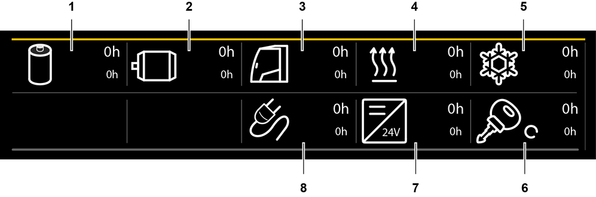
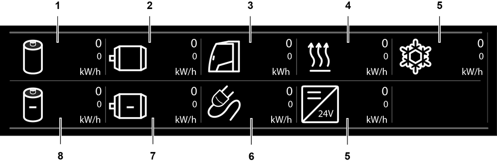

Bildschirmseite Betriebsstunden (Hochvoltsystem)
Taste Bildschirmseite Betriebsstunden
Bildschirmseite Betriebsstunden einblenden.
Taste Relative Betriebsstunden zurücksetzen
Betriebsstunden und Energiezähler zurücksetzen.
Anzeige Komponente aktiv
Komponente des Hochvoltsystems ist aktiv.

Fig. 2857: Bildschirmausschnitt Betriebsstunden
Fig. 2857: Bildschirmausschnitt Betriebsstunden
Anzeige Betriebsstunden der Hochvoltbatterien | |
Anzeige Betriebsstunden des Elektromotors | |
Anzeige Betriebsstunden der Klimaanlage | |
Anzeige Betriebsstunden des Hochvoltheizers | |
Anzeige Betriebsstunden der Wärmepumpen | |
Anzeige Betriebsstunden bei eingeschalteter Zündung | |
Anzeige Betriebsstunden des DC-DC-Wandlers | |
Anzeige Betriebsstunden der Ladegeräte |
Anzeige Betriebsstunden der Hochvoltbatterien
Betriebsstunden der Hochvoltbatterien.
Anzeige Betriebsstunden des Elektromotors
Betriebsstunden des Elektromotors.
Anzeige Betriebsstunden der Klimaanlage
Betriebsstunden der Klimaanlage.
Anzeige Betriebsstunden des Hochvoltheizers
Betriebsstunden des Hochvoltheizers.
Anzeige Betriebsstunden der Wärmepumpen
Betriebsstunden der Wärmepumpen.
Anzeige Betriebsstunden der Ladegeräte
Betriebsstunden der Ladegeräte.
Anzeige Betriebsstunden des DC-DC-Wandlers
Betriebsstunden des DC-DC-Wandlers.
Anzeige Betriebsstunden bei eingeschalteter Zündung
Betriebsstunden bei eingeschalteter Zündung.

Fig. 2866: Bildschirmausschnitt Energiezähler
Fig. 2866: Bildschirmausschnitt Energiezähler
Anzeige Aufgenommene Energie der Hochvoltbatterien | |
Anzeige Aufgenommene Energie des Elektromotors | |
Anzeige Aufgenommene Energie der Klimaanlage | |
Anzeige Aufgenommene Energie des Hochvoltheizers | |
Anzeige Aufgenommene Energie der Wärmepumpen | |
Anzeige Aufgenommene Energie des DC-DC-Wandlers | |
Anzeige Aufgenommene Energie der Ladegeräte | |
Anzeige Abgegebene Energie des Elektromotors | |
Anzeige Abgegebene Energie der Hochvoltbatterien |
Anzeige Aufgenommene Energie der Hochvoltbatterien
Aufgenommene Energie der Hochvoltbatterien.
Anzeige Aufgenommene Energie des Elektromotors
Aufgenommene Energie des Elektromotors.
Anzeige Aufgenommene Energie der Klimaanlage
Aufgenommene Energie der Klimaanlage.
Anzeige Aufgenommene Energie des Hochvoltheizers
Aufgenommene Energie des Hochvoltheizers.
Anzeige Aufgenommene Energie der Wärmepumpen
Aufgenommene Energie der Wärmepumpen.
Anzeige Abgegebene Energie der Hochvoltbatterien
Abgegebene Energie der Hochvoltbatterien.
Anzeige Abgegebene Energie des Elektromotors
Abgegebene Energie des Elektromotors.
Anzeige Aufgenommene Energie der Ladegeräte
Aufgenommene Energie der Ladegeräte.
Anzeige Aufgenommene Energie des DC-DC-Wandlers
Aufgenommene Energie des DC-DC-Wandlers.